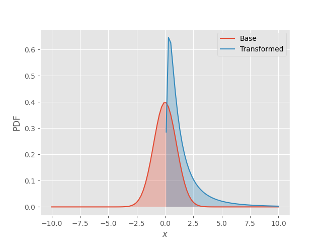
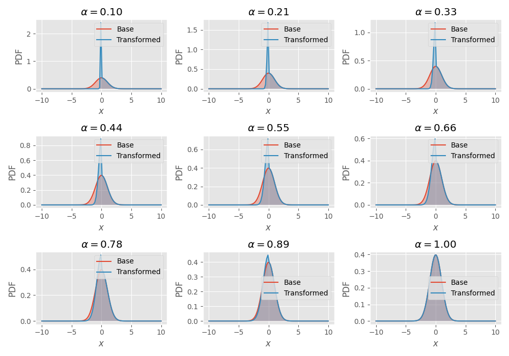
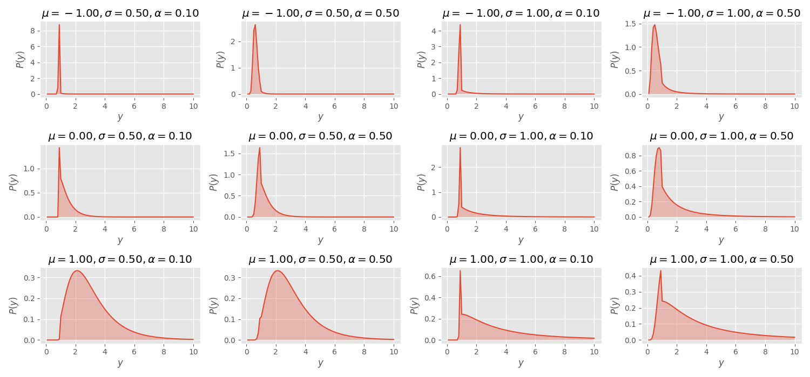

Lab 04.01.4: Bijectors
Contents
# init repo notebook
!git clone https://github.com/rramosp/ppdl.git > /dev/null 2> /dev/null
!mv -n ppdl/content/init.py ppdl/content/local . 2> /dev/null
!pip install -r ppdl/content/requirements.txt > /dev/null
Lab 04.01.4: Bijectors¶
In this lab, we will implement a custom bijector using tensorflow operations.
First, let us import the required libraries:
import inspect
from rlxmoocapi import submit, session
import numpy as np
import tensorflow as tf
import tensorflow_probability as tfp
import matplotlib.pyplot as plt
from itertools import product
plt.style.use("ggplot")
tfd = tfp.distributions
tfb = tfp.bijectors
course_id = "ppdl.v1"
endpoint = "https://m5knaekxo6.execute-api.us-west-2.amazonaws.com/dev-v0001/rlxmooc"
lab = "L04.01.04"
session.LoginSequence(
endpoint=endpoint,
course_id=course_id,
lab_id=lab,
varname="student"
);
Custom Bijectors¶
The general purpose of the tfp.bijectors module is to implement different bijective functions that may be used as random variables’ mappings to generate complex probability distributions from other distributions.
Specifically, a bijector is defined from a function \(f(\cdot)\) and it’s inverse function \(f^{-1}(\cdot)\), and given the change of variables rule in continuous random variables for the transformation \(y=f(x)\) of a random variable \(x\), we obtain:
Let’s see an example with the following bijector, using tensorflow_probability:
class ProductBijector(tfb.Bijector):
def __init__(self, value=2, *args, **kwargs):
self.value = value
super(ProductBijector, self).__init__(
*args, **kwargs,
forward_min_event_ndims=0
)
def _forward(self, x):
return x * self.value
def _inverse(self, y):
return y / self.value
def _forward_log_det_jacobian(self, x):
return tf.constant(tf.math.log(2.), x.dtype)
In this case, we must implement the following methods in the class:
_forward: the function \(f(x)\)._inverse: the function \(f^{-1}(y)\)._forward_log_det_jacobian: the jacobian (derivative) of the logarithm of the jacobian’s determintant used to transform the variable.
Let’s see an application of this bijector:
bijector = ProductBijector(name="product")
base_distro = tfd.Normal(loc=0, scale=1)
transformed_distro = tfd.TransformedDistribution(
base_distro,
bijector
)
Let’s see a comparison between the pdf of the base distribution and the transformed distribution:
x_range = tf.cast(tf.linspace(-10, 10, 100), "float32")
pdf1 = base_distro.prob(x_range)
pdf2 = transformed_distro.prob(x_range)
fig, ax = plt.subplots()
ax.plot(x_range, pdf1, label="Base")
ax.plot(x_range, pdf2, label="Transformed")
ax.set_xlabel("$x$")
ax.set_ylabel("PDF")
ax.legend()
fig.savefig("tmp.png")
We can also generate samples
sample = transformed_distro.sample(100).numpy()
print(sample.mean())
print(sample.std())
As you can see, the rescaling the normally distributed variables just changes it’s standard deviation (that’s why it’s known as the scale parameter).
TODO: clarify what must be computed¶
def get_exp_bijector():
class ExpBijector(tfb.Bijector):
def __init__(self, *args, **kwargs):
super(ExpBijector, self).__init__(
*args, **kwargs,
forward_min_event_ndims=0
)
def _forward(self, x):
# Your code here
...
def _inverse(self, y):
# Your code here
...
def _forward_log_det_jacobian(self, x):
# Your code here
...
return ExpBijector()
If you run the following cell, you must obtain the same result that is shown in the image:

base_distro = tfd.Normal(loc=0, scale=1)
bijector = get_exp_bijector()
transformed_distro = tfd.TransformedDistribution(base_distro, bijector)
x_range = tf.cast(tf.linspace(-10, 10, 100), "float32")
pdf1 = base_distro.prob(x_range)
pdf2 = transformed_distro.prob(x_range)
fig, ax = plt.subplots()
ax.plot(x_range, pdf1, label="Base")
ax.fill_between(x_range, tf.zeros((x_range.shape[0], )), pdf1, alpha=0.3)
ax.plot(x_range, pdf2, label="Transformed")
ax.fill_between(x_range, tf.zeros((x_range.shape[0], )), pdf2, alpha=0.3)
ax.set_xlabel("$x$")
ax.set_ylabel("PDF")
ax.legend()
Use the following cell to grade your code:
student.submit_task(namespace=globals(), task_id="T1");
Task 2¶
In this task you must implement the following bijector:
Clarify that x will be a tensor with any dimension¶
def get_leaky_bijector(a=0.1):
class LeakyReluBijector(tfb.Bijector):
def __init__(self, a=0.1, *args, **kwargs):
super(LeakyReluBijector, self).__init__(
*args, **kwargs,
forward_min_event_ndims=1
)
self.a = a
def _forward(self, x):
# Your code here
...
def _inverse(self, y):
# Your code here
...
def _inverse_log_det_jacobian(self, y):
# Your code here
...
return LeakyReluBijector(a=a)
If you run the following cell, you must obtain the same result that is shown in the image:

base_distro = tfd.Normal(loc=0, scale=1)
fig, axes = plt.subplots(3, 3, figsize=(10, 7))
a = np.linspace(0.1, 1, 9)
acum = 0
for i in range(3):
for j in range(3):
ax = axes[i, j]
bijector = get_leaky_bijector(a=a[acum])
transformed_distro = tfd.TransformedDistribution(base_distro, bijector)
x_range = tf.cast(
tf.linspace(-10, 10, 100),
"float32"
)
pdf1 = base_distro.prob(x_range)
pdf2 = transformed_distro.prob(x_range)
ax.plot(x_range, pdf1, label="Base")
ax.fill_between(x_range, tf.zeros((x_range.shape[0], )), pdf1, alpha=0.3)
ax.plot(x_range, pdf2, label="Transformed")
ax.fill_between(x_range, tf.zeros((x_range.shape[0], )), pdf2, alpha=0.3)
ax.set_xlabel("$x$")
ax.set_ylabel("PDF")
ax.set_title(f"$\\alpha={a[acum]:.2f}$")
ax.legend()
acum += 1
fig.tight_layout()
Use the following cell to grade your code:
student.submit_task(namespace=globals(), task_id="T2");
Task 3¶
Compute a composite distribution that uses the following transformations:
You must compute a distribution for:
def get_full_distro(mu, sigma, a):
bijectors = [
get_exp_bijector(),
get_leaky_bijector(a)
]
full_bijector = tfb.Chain(bijectors)
base_distro = tfd.Normal(loc=mu, scale=sigma)
transformed_distro = tfd.TransformedDistribution(
base_distro, full_bijector
)
return transformed_distro
If you run the following cell, you must obtain the same result that is shown in the image:

x_range = tf.cast(
tf.linspace(0, 10, 100),
"float32"
)
mu = np.linspace(-1, 1, 3).astype("float32")
sigma = np.array([0.5, 1]).astype("float32")
a = np.array([0.1, 0.5]).astype("float32")
fig, ax = plt.subplots(3, 4, figsize=(15, 7))
for i, (mu_i, sigma_i, a_i) in enumerate(product(mu, sigma, a)):
axi = ax[i // 4, i % 4]
dist = get_full_distro(mu_i, sigma_i, a_i)
pdf = dist.prob(x_range)
axi.plot(x_range, pdf)
axi.fill_between(x_range, tf.zeros((x_range.shape[0], )), pdf, alpha=0.3)
axi.set_xlabel("$y$")
axi.set_ylabel("$P(y)$")
axi.set_title(f"$\\mu={mu_i:.2f},\\sigma={sigma_i:.2f},\\alpha={a_i:.2f}$")
fig.tight_layout()
Use the following cell to grade your code:
student.submit_task(namespace=globals(), task_id="T3");